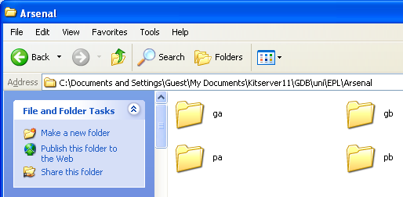
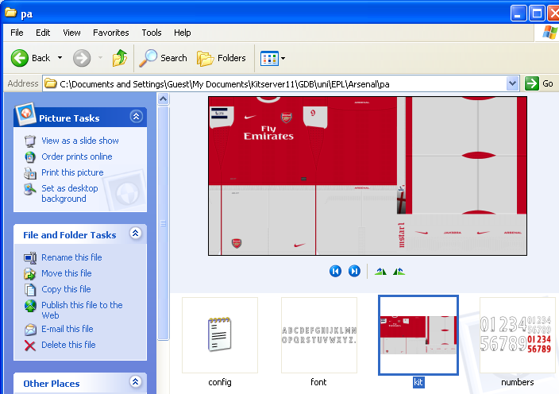
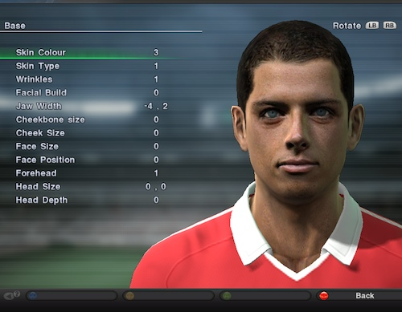
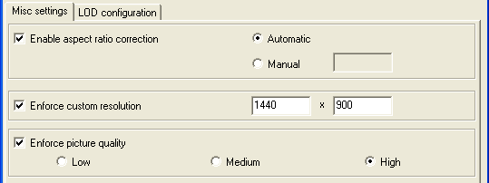
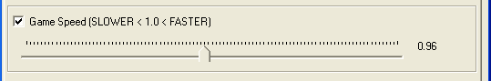
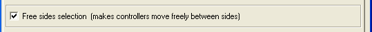

Usually, the most up-to-date version of this documentation, and the translations to many languages, are located here: http://kitserver.ath.cx/docs/. Documentation for Kitservers 5-8 and Kitserver 2010 can also be found there.

Kitserver 11 is an add-on program for Pro Evolution Soccer 2011 (and Pro Evolution Soccer 2011 DEMO). It is a loader and manager for various modules, where
each module is built as a (typically) independent DLL containing logic to
enhance the game in particular aspect. While originally the Kitserver was
developed to "serve" kits for Pro Evolution Soccer 3, a lot more functionality
has been added over the years.
Below is a quick summary of the available features. Follow the link in the left column to get more details about a particular module.
If you are new to Kitserver, please make sure you read the installation instructions.
| AFS2FS 11.0.0 | afs2fs.dll | Manage AFS (.img) game content using files and folders: much easier and quicker to install/remove patches, without the need modify *.img files. |
|---|---|---|
| Kserv 11.0.3 | kserv.dll | Organize your kits into GDB, and assign each team its own kits. |
| Faceserver 11.1.0 | fserv.dll | Assign special face/hair (from GDB) to any player you want. |
| LOD Mixer 11.1.0 | lodmixer.dll | Misc visual tweaks, fine-tune LOD for players and referees. |
| Speeder module 11.1.0 | speeder.dll | Increase or decrease gameplay speed. |
| Sides module 11.1.0 | sides.dll | Allow free side selection during matches. |
With XP and Vista, and now Windows 7 having more emphasis and enforcement of file ownership and different user rights, and promoting the use of "Standard User" accounts, the installation routine of Kitserver has changed. If you are a "seasoned" kitserver user, please read this carefully, because it will save you a lot of unnecessary hair-pulling.

In many cases, following the 3 steps, as outlined by the message in the installer window, will be all that you need to do. If so, then great, go on and enjoy the game with new features that Kitserver adds. :)
You can leave the default directory as specified by the installer, or you can put in your own. The important thing is that you choose a folder that you have full ownership of. (Your HOME directory is one good example of that. Another good candidates are: "My Documents" folder or Desktop). This is particularly important on Vista, because this way we sidestep all the nasty surprises of Vista File Virtualization. Also, this makes sure that you will NOT need administrative privileges to run the game under the control of Kitserver.
Once installer unpacks the files into the folder of your choice, go there. You should see a folder named Kitserver11. Open it, and you should see the following files:

Next step is to make sure you have a file called config.txt.
If you are installing Kitserver 11 for the first time, you probably do not
have an existing config.txt. In that case, just run the
configuration tool program, called config.exe,
press [Save] button, and it will create a config.txt file for you.
If, however, you are upgrading from previous version of Kitserver, then you already have an existing config.txt, which you probably will want to re-use. (For instance, it contains your carefully configured LOD settings, which you definitely don't want to lose!). If that's the case, then you will need to compate config-sample.txt with your existing config.txt, and (if neede) make the necessary changes to config.txt
Uninstall is very easy: just delete the Kitserver11 folder, when you no longer need it. Kitserver doesn't write into system folders, or anything of that sort, so removal is very simple.
So now you have the config.txt file, and we are ready to launch the game under the "guidance" of Kitserver. There is a couple ways to do that, and we will go through both of them in this documentation.
First, let's try the simplest approach. With Kitserver 11.0.0, a new tool was introduced: krun.exe - Kitserver Game Launcher. This is the tool that we will now use to run the game under the control of Kitserver: just double-click on krun.exe and the game should start after a few seconds delay.
By default, krun will consult your Windows registry, to find out where you have the game installed, and try to launch an executable from that folder, called PES2011.exe. In most typical scenario, this is exactly what you want :)
People who had been using Kitserver for a few years now, will notice that this is different from how things worked before: Kitserver no longer modifies the game EXE in-place, but instead makes a modified copy of it in the "temp" folder, and then the modified module is executed as a child process of krun program. The new way maybe somewhat unfamiliar, but it actually solves many security-related problems that surfaced with using the old system.
This used to be the "standard" way to work with kitserver, before the introduction of krun. There are still scenarios, where it is easier to do it the old way: for example for patchmakers that release a big patch that includes their own modified version of game exe, a kitserver with pre-configured config.txt, img-folders, GDB, and so for, it is easier to just pre-attach kitserver to the game exe and let users to launch the game "the normal way"- by double-clicking on the the patched game executable.
If you are a long-term user of Kitserver (maybe even from the glory days of PES3!), then you are probably also more acustomed to using manager.exe, instead of krun. That's fine. Both ways can be used successfully, if certain steps are taken to avoid common pitfals.
To use the manager program, you need to put your entire kitserver11 folder into the same directory, where you have the game exe that you want to attach kitserver to. Two ways to do it:
Now, go to kitserver11 folder, and run manager.exe. If you placed the files correctly, then you will see manager showing you the list of game executables that you can Attach/Detach kitserver to. Click [Attach] button, and wait for the manager to confirm that the attachment was successful. Now go one level up in the folder hierarchy and double-click on the game exe (to which you just attached the kitserver) and the game should start.
We have already covered the simplest way to use krun tool. However, it may be the case that you have a more elaborate setup. Maybe you have alternative EXEs installed, perhaps those that came from a community-created patch or patches. So let's say instead of PES2011.exe from your game folder, you want to launch the game using this exe: C:\myPesPatch\PES2011_patched.exe.
This is also possible to do with krun tool: you just need to create a configuration file for it, which contains the full pathname of the exe. We make a text file called krun-config.txt, which now has the format similar to that of config.txt. You will need to have a [krun] section in it, and the option to specify EXE file is called exe. Here is an example of such file:
[krun] exe = "c:\myPesPatch\PES2011_patched.exe"
That's it. Now when you double-click on krun.exe, instead of reading the location of the game from registry, it will launch the EXE that is specified in krun-config.txt.
This perhaps can be called an "advanced" trick, and may be useful to patchmakers: you can rename krun.exe to something else, and it will still be able to find its configuration file, if you also name it correctly.
For example, let's say your called it MyPatchRun.exe. Then you need to call the configuration file: MyPatchRun-config.txt.
So you double-clicked on krun.exe, but nothing happened - the game did not start. The most common reason for that is mistyped path of the EXE in krun-config.txt, but there could be other reasons too.
First, wait a few seconds: it can sometimes take several seconds for the game to launch with Kitserver.
If after 5-10 seconds, the game does not start, check krun.log file. It should have an explanation there on what went wrong. (If you renamed your krun.exe to MyPatchRun.exe, then the log file would also be named accordingly: MyPatchRun.log)
You can always run the game without Kitserver.
Just launch it the normal way, as you would - through the Start Menu or
via a shortcut on your Desktop. If you don't use krun utility, then
Kitserver is not loaded into memory with the game.
This is handy for troubleshooting crashes, for example. Things go wrong no matter what, so the first thing you'd want to do is to isolate a problem. You will want to know if the Kitserver is causing a crash, or if something else is at fault. Launching the game without Kitserver is a good first step to see what's causing the issue.
Kitserver uses a file called config.txt as its main configuration file. A lot of things are specified there, including which modules to load, what settings those modules should use, and etc. Here is an example of what can be in config.txt:
[afs2fs] img.dir = "c:\mypesfiles\root1" [kload] dll = fserv.dll dll = kserv.dll dll = afs2fs.dll dll = speeder.dll dll = sides.dll dll = lodmixer.dll
Each module can have its own configuration section, which starts with [module-name], and typically has one or more options following it. Now, normally you wouldn't need to modify config.txt file, except for the cases, when you need to modify the behaviour of a particular module (DLL), or enable/disable such DLL.
To disable a particular module - just comment out the corresponding line in the [kload] section by putting a '#' symbol at the beginning. (Or you can delete that line altogether.)
The order of the DLLs is important. In particular: kserv.dll and fserv.dll must be loaded before afs2fs.dll. Only in very rare situations you should try re-arranging the DLLs.
Formerly known as lodcfg.exe (it used to be the GUI tool for LOD mixer only, but now it covers other configuration options as well), this simple GUI program allows to modify some configuration settings in config.txt. It's a helper tool and all that it does, you can also do manually, by editing config.txt in your favourite text editor. In fact, some things you can only do manually - like adding and removing modules (DLLs). But for simple things - like changing game speed or fine-tuning the LOD levels, it's faster and easier to just launch config.exe, quickly adjust things, then click [Save] button, and you're done.
This module allows to organize your BIN-files into folders on disk, instead of inserting them into AFS(*.img) files, which is sometimes a pain, and may require a lot of extra disk space.
Several people over the last few years had suggested similar solutions, but ultimately it was Str@teG who kept talking about this idea of organizing BINs into folders, and eventually i decided to just go ahead and do it. So now this is realized in the this module - afs2fs.dll. From personal experience, i know that people are sometimes reluctant to install big patches that require an AFS-rebuild, not because it's particularly difficult or anything, but because it can be time-consuming and disk-space-hungry. With afs2fs, this is now very easy: you just put the BIN into correct folder and that's it. And, of course, there are no size constraints - the bins can be as large as needed!
The module is also handy, when you want to try a patch without risking totally destroying the content that you already have. Putting a new patch into a separate AFS-root and modifying config.txt is all you need to get it going. Removal as easy too: delete the correspoding "img.dir" line in config.txt, and then delete the AFS-root folder. Multiple patches is no longer a management nightmare :). (See more info on AFS-roots in the sections below)
Start by choosing a location where you would be putting your files. For example, let's take c:\mypesfiles\root1. This will be your so-called AFS-root. Inside that folder, create a folder called img. (This is very important that you have the folder named "img", since the game relies on particular names). Then, inside img, create folders, as needed, named - dt00.img, dt01.img, dt0b.img, and so for. That's where you're going to be putting the BIN-files.
It's important to name the folders correctly: a folder must have exactly the same name as the corresponding AFS-file. For instance, if you call a folder dt00, instead of dt00.img, things will not work.
This is how my img folder looks:

In general, you can name the files whichever way you want, but you must follow one rule: there must be a BIN number in the name, and it must be preceded by an underscore character ('_'). Also, the filenames CANNOT be longer than 63 characters.
Examples of correctly named files:
unknown_317.bin
goalnet_41.bin
ball_9.bin
unknow_9 (.bin extension is optional)
music_11.adx (a file can have a different extension: .adx is typically used for music and sound files)
Examples of incorrectly named files:
unnamed10.bin - no underscore symbol before the BIN number.
face.bin - no BIN number.
By default, the AFS2FS module will not search any "special" default paths. Instead you must specify your AFS roots explicitly: In [afs2fs] section of config.txt, you can speficy the location of your root, which can be anywhere on your hard disk. You can also have multiple roots, which is very useful if you have several patches, and you don't want to lose track of which BINs came from which patches (so that you can easily uninstall a patch by just deleting its root folder).
Here is an example with 3 different roots are configured:
[afs2fs] img.dir = "c:\mypesfiles\root1" img.dir = "patch-RPL" img.dir = "afs-root3"
The order of the roots is significant, when it comes to resolving "collisions". Say, you have a dt0b.img/ball_9.bin in the second root (patch-RPL), and dt0b.img/superball_9.bin in the third root (afs-root3). Even though the files are actually named differently, they intend to replace the same BIN - #9 from dt0b.img, and therefore we have a "collision". The rule is simple: the lower root in the list wins. Which means that in this situation, the dt0b.img/superball_9.bin file will be used, since its root is listed last in the [afs2fs] section.
IMPORTANT thing to remember: The root is the folder that contains "img", not the "img" folder itself. In other words, if the full pathname is c:\mypesfiles\root1\img", then in the config.txt you should have: img.dir = "c:\mypesfiles\root1"
When replacing songs with AFS2FS, it is also possible to change the title of the song and the artist's name, by using a songs.txt map-file, which should be put into afs-root folder.
Here's an example of such songs.txt file:
# Song names map # Format: <binId>, "<title>", "<artist>" # Note that double quotes are required. 44, "I'm mad about you", "Sting" 45, "Вне зоны доступа", "Город 312"
IMPORTANT: as with all other map-files and config files that Kitserver uses, the encoding of the file needs to be Utf-8 or Unicode, especially of you use non-latin symbols - like in the example above. (ANSI encoding is ok if you only use Latin-1 characters.)
Similarly with balls, if you are replacing ball BINs, you probably want to adjust their names too. One easy way to do that is to use a balls.txt map-file, which should be put into afs-root folder:
# Ball names map # Format: <ball-number>, "<name>" # Note that double quotes are required. # (Ball numbers go from 1 to 16) 8, "Nike-ball Blue" 9, "Мячик плохонький"
It is worth noting that each afs-root folder can have its own songs.txt and balls.txt. Since each afs-root may contain music files and ball files, it makes sense to tie the names to them this way. If you have multiple afs-roots(as when for example you have multiple patches, and each patch uses its own afs-root), then the "conflicts" are resolved the same way as they are with BINs (see above for details). In other words, if one afs-root has name for song 11, and another afs-root has a name for song 11, then whichever afs-root is specified lower in the list (in config.txt) - will win.
Here's a picture to clarify where songs.txt and balls.txt files should be placed. In this case "root1" is my afs-root:

Kserv module is responsible for serving kits from the GDB ("Game content DataBase") during the game. The main feature of it is that you are not limited to the slots that dt0c.img has for the kits, and you can assign a kit to any team.
Kserv was historically the first module implemented in the original Kitserver program, made for PES3. That's where the Kitserver name originated from. Later, as more functionality were introduced as new modules, to avoid confusion, we changed the name of the module that serves kits to kserv, while Kitserver name now refers to the entire program.
The GDB contains a folder named uni, which is responsible for storing the team kits (uniforms). The single most important file inside uni is called map.txt. This file tells kitserver where to find the kits for particular team. As you know, each team has a unique id - an integer number from 0 to 370. For every team in the GDB, you must specify in the map.txt where the kits for this team are. Here is an example:
# This config maps team number into folder name # Format: <team-num>,"<folder name>" # Example: 23,"Russia" 23,"National\Russia" 7, "National\England" 88, "EPL\Arsenal"
Please note that the sample GDB (provided with kitserver) is just one possible way of organizing the teams and folders. It uses "EPL" folder to group all english teams, "National" - to group all national teams, and so for. You may find that you just prefer a flat list of folders - without these extra groups. In that case, just modify the map.txt file accordingly, and create the structure of folders that you prefer. That's the main advantage of having map.txt - the flexibility of kit organization.
You can see from map.txt above that in order to find a kit for team #88, the kitserver needs to go to the folder GDB\uni\EPL\Arsenal. This folder will contain all of the kits that are available to team #88. Inside it, you must create an individual folder for each kit. Like this:  For players, 1st kit must have a folder name pa, 2nd - pb. Extra kits can have any folder names that start with letter "p". I found it useful to prefix all extra kits with px-. For example, px-redwhite. For the goalkeepers, 1st kit must be in the folder ga, 2nd - in the gb. Extra kits can have any folder names that start with letter "g".
Now let's move on inside one of the kit folders. Take pa, for example.  See the table below for explanation of each file:
| Reserved file name | Meaning | Format |
|---|---|---|
| Kit texture | 1024x512 8-bit paletted image in PNG format. | |
| Font texture: used for names on the back of the shirt | 256x64 8-bit or 4-bit paletted image in PNG format. | |
| Numbers texture: used for numbers on the back and the front of the shirt, and also on shorts | 512x256 8-bit or 4-bit paletted image in PNG format. | |
| config.txt | Kit attribute configuration file (see next section for more details) | text file (in UTF-8 encoding) |
IMPORTANT NOTE TO KITMAKERS:
BMP kits are no longer supported, please use PNG format instead.
This is the attribute configuration file. As before, it is just a plain text file - you can use Notepad or any other text editor to view or modify it. For each folder, you should have a config.txt file in it. Here is an example config.txt from pa folder:
# Attribute configuration file auto-generated by GDB Manager collar = 1 front.number.show = 0 main.color = BA001D second.color = D7D7D7 socks.color = D7D7D7 icon.type = 4 model = 10 name.shape = type3 name.show = 1 name.size = 28 name.y = 20 number.size = 20 number.y = 7 shorts.color = D7D7D7 shorts.number.location = left shorts.number.size = 20 shorts.number.x = 12 shorts.number.y = 8 sleeve.patch.left.pos.long = 12 sleeve.patch.left.pos.short = 12 sleeve.patch.right.pos.long = 7 sleeve.patch.right.pos.short = 7
The summary table of all the supported attributes:
| Attribute name | Meaning | Format | Example |
|---|---|---|---|
| collar | Collar-type (note that different models will have different interpratations of the collar value) | 1/2/3/4 | |
| description | Any notes about the kit. This text will be displayed on kit selection screen. Useful when there are several kits that look nearly identical, but you want to know which one is currently selected. | any text in double quotes | |
| front.number.show | Specifies if front number should be shown on the shirt: 1-show, 0-hide.(This only applies to national teams.) | 0|1 | |
| front.number.size | How big the front number on the shirt is. | decimal number. Range: 1-30 | |
| front.number.x | Horizontal position of the front number on the shirt. | decimal number. Range: 0(left)-30(right) | |
| front.number.y | Vertical position of the front number on the shirt. | decimal number. Range: 0(low)-30(high) | |
| main.color ( radar.color ) |
This attribute specifies the main color of the shirt. It is also used as the color of the players on radar screen. It also influences the kit that is selected by default. (The old name "radar.color" is also supported for backwards compatibility) | color, written in hexadecimal format RRGGBB (red,green,blue) | |
| second.color | This attribute specifies the "second" color of the shirt. It is used in Formation screens (Game Plan), when painting the player icons, together with the main color. | color, written in hexadecimal format RRGGBB (red,green,blue) | |
| socks.color | This attribute specifies the color of the socks. | color, written in hexadecimal format RRGGBB (red,green,blue) | |
| icon.type | Type of the player icon used in Formation screen (Game Plan). This affects how the the icon is drawn: one solid color, striped, or some other pattern of two colors. | decimal integer (range: 0-16) | |
| model | identifier for 3D-model of the shirt | decimal integer | |
| name.show | Specifies if player name should be shown on the shirt: 1-show, 0-hide. | 0|1 | |
| name.shape | Indicates whether the name should be curved or straight. The values have the same meaning as in Edit Mode: type1 - straight, type2 - slightly curved, type3 - more curved, type4 - even more curved. | type1|type2|type3|type4 | |
| name.size | Size of the player's name on the shirt. | decimal number. Range: 1-35 | |
| name.y | Vertical position of the player's name. | decimal number. Range: 0(low)-30(high) | |
| number.size | Size of the number on the back. | decimal number. Range: 1-35 | |
| number.y | Vertical position of the number on the back. | decimal number. Range: 0(low)-30(high) | |
| shorts.color | This attribute specifies the color of the player/gk shorts. The color of shorts is used by the game to determine correct color of the underpants for those players who wear them, and have them set to match the shorts color. | color, written in hexadecimal format RRGGBB (red,green,blue) | |
| shorts.number.location | Where on the shorts the number should be placed. ("off" means the number will not be displayed at all.) | left|right|off | |
| shorts.number.size | Size of the number on shorts. | decimal number. Range: 1-35 | |
| shorts.number.x | Horizontal position of the number on shorts. | decimal number. Range: 0(left)-30(right) | |
| shorts.number.y | Vertical position of the number on shorts. | decimal number. Range: 0(low)-30(high) | |
| sleeve.patch.left.pos.long | Position of the patch on left long sleeve. | decimal number. Range: 0-13 | |
| sleeve.patch.left.pos.short | Position of the patch on left short sleeve. | decimal number. Range: 0-13 | |
| sleeve.patch.right.pos.long | Position of the patch on right long sleeve. | decimal number. Range: 0-13 | |
| sleeve.patch.right.pos.short | Position of the patch on right short sleeve. | decimal number. Range: 0-13 |
By default, the usage of "description" attribute is enabled, but if you want, you can disable it. To do that, edit the main configuration file, and add the following option to the [kserv] section:
[kserv] use.description = 0
In their DLC updates, KONAMI included new models which use different kit textures - the one where two variants of a kit coexist in the same picture: a tight fit, and a normal one.
Only certain models support those textures, and as of DLC 2.00, they are: 35,36,37,38,39,40 and 41. Kserv module 11.0.0.0 supports those without any additional configuration. However, if another update is released and more models like that are added, it is now possible to specify them in the [kserv] section of config.txt. You need to list all of them like this:
[kserv] ... techfit.model = 35 techfit.model = 36 techfit.model = 37 techfit.model = 38 techfit.model = 39 techfit.model = 40 techfit.model = 41 ...
Another type of special model is Puma Tight-fit, model 24. It allows to make any normal kit become tight-fitting kit (good examples of that are kits worn by African teams)
As of DLC 2.00, only 24 is a model like and Kserv module 11.0.0.0 supports those without any additional configuration. However, if another update is released and more models like that are added, it is possible to specify them in the [kserv] section of config.txt. You need to list all of them like this:
[kserv] ... tight.model = 24 ...
Faceserver makes it possible to load as many faces and hair from the GDB as you want. So, you can assign each player a unique face/hair combination, if you want to, including custom created players. Faceserver makes use of unique ids, which are assigned to each player, and it creates "virtual" face and hair slots, that only exist during run-time.
If you have faceserver enabled (which it is by default), just start the game, and then in the kitserver folder, there should appear a text file called playerlist.txt. It will contain the IDs for all the players that you have in your game, sorted alphabetically for easy searching, including the user-defined players that were created from scratch in Edit mode (those typically take IDs starting from 1048576).
The only player ID not available in playlist.txt file is the ID for you BAL (Be-A-Legend) player. However, it looks like that ID is always: 16777376.
Faceserver uses a map file (GDB/faces/map.txt), similar in format to Kserv: you specify player's unique ID, followed by a filename for his face, and optionally followed by a filename for his hair:
{ID}, {face-file}, {hair-file}
The filenames are relative to GDB/faces folder, but inside that you're free to organize them whichever way you want: either one flat directory, or a folder hierarchy. The only important thing is that you correctly specify the paths in the map.txt. The double-quotes around filenames are optional.
Here are some examples of entries in map.txt:
# Example 1: face and hair BINs: 36556, chicharito_face.bin, chicharito_hair.bin # Example 2: face only (fetched from a "Mexico" folder inside "faces"): 36556, "Mexico\chicharito_face.bin" # Example 3: hair only (notice 2 commas!) 36556, , chicharito_hair.bin
Faceserver should work fine in all online modes, although i have not done a lot of testing with it. Ranking and Friendly matches were successfully played with faces/hairs assigned through faceserver.
LOD-Mixer is the module that allows to fine-tune some aspects of PES2011 graphics engine.
These settings can be configured manually in kitserver's main
configuration file (kitserver/config.txt), but it is probably easier
to use Kitserver's configuration tool
(config.exe).

Many LCD monitors are neither 4:3 nor 16:9. Often, a 16:10 ratio is used, or even 16:9.6. This results in the picture being distored: players either too fat or too skinny, and ball is not round. In this year version, Konami are again using the black bars (as in PES2009 and PES2010) to compensate for the case when aspect-ratio is different (LB checkbox). However, if you don't like the black bars, then run settings.exe, turn off the LB checkbox, and then use Kitserver's aspect-ratio correction feature instead:
With LOD Mixer, you can set the aspect ratio to whatever you want. Either let LOD Mixer calculate it automatically - at run-time, using the current screen width and height in pixels - or set the value manually. Automatic way would work quite accurately, assuming the pixel is square. Sometimes, however, you would want to set it manually. For example, i play on widescreen monitor, but using a 800x600 resolution, because my video card is not powerful enough. The automatic calculation would give 4:3, but since the view is stretched to fill the entire screen, we need to account for that. Setting aspect ratio to 1.6 (which is a natural AR for my laptop) does the trick.
You can set any screen resolution you want, if you play in a Windowed mode. Even crazy screens like 1234x487 will work, but you're likely to suffer from performance problems on such cases. Hidden fullscreen resolutions are fully unlocked now as well. However, only those that your video card really supports in full-screen mode, will work. If you accidently choose an unsupported fullscreen resolution, then PES should still be able to start in a window.
Although this is now a rare case, there are still situations, where the game (and the settings.exe) do not correctly analyze the capability of the video card, and because of that can erroneously disable "Medium" and "High" picture quality settings.
If you are a "lucky" one with a card like that, LOD mixer can help you play with a better picture quality. Selecting one of the settings - Low, Medium, or High - will override the choice made in settings.exe, and will also disable any video compatibility checks that the game makes. Therefore, be careful with this feature: if you video card does NOT indeed support the chosen picture quality, the game will most likely crash or exit abnormally.
LOD (Level-Of-Detail) algorithms are used in graphics engines to improve both the picture quality and the speed of rendering, when drawing objects at various distances from the viewer. The basic idea is that when the object is close to the camera, one (very detailed) model is used. When it is far - another, simpler model with less detail is used instead. It's much faster to render a low-poly model of the object, and it typically looks better, when drawn in small size, because it suffers less from aliasing. In theory, at least, that is how it is supposed to work.
PES 2011 has 4 different ways it can render a player. The choice of the rendering used at any given moment depends on several circumstances: how far the player is from the camera, is this an active player (currently controlled by human), is this a gameplay rendering or a replay, and so for. Here's the picture that shows how these LODs differ visually:

Notice the S1, S2, S3 labels, which are placed among the four renderings. You can think of them as "switches" from one type of rendering to another. (For instance, S1 controls when the game engine switches from drawing a player at full detail to drawing the same player at slightly less detail.) This is what the S1,S2,S3 means that you see in the configuration tool UI.
Unfortunately, PES series had always suffered from an overly- conservative LOD configuration, where the switch to low-poly models would happen way too soon, and that would result in various visible artifacts. In PES4-PES6, examples were: balding players, and missing details on kits. In PES2008-PES2011, the players and referees appear to have blurred generic faces, once they move slightly away from the camera.
So, if you have a good PC and a powerful videocard with GPU cycles to spare, you may fancy tuning the LOD sligtly to make the game engine display more detailed models, even when they players are a bit away from the camera (Animation quality seems to be affected by this as well). To do that, move the sliders to the right.
Also, if on the contrary, your machine is struggling to run the game at a smooth frame rate, you can try moving the LOD sliders in the opposite direction - thus making the engine switch to the low-poly models sooner than normal. This may improve the framerate, although at the expense of picture quality. To achieve that, move the sliders to the left.
Configuring LOD well takes time and is best done via trial-and-error method. (If it was easy, it would've been probably done right in the first place!) I'd like to mention a few considerations here that should help you with LOD configs.
Myth #1: if I move all sliders to the right,
I will always have the best picture.
That is simply not true. You will get the most detailed and expensive
rendering, yes, but NOT NECESSARILY the one that looks the best.
More-detailed objects at far distance actually look worse than
less-detailed ones, because of the aliasing effect.
Myth #2: my GPU (video card) is really good, surely it can handle anything thrown at it.
That is not true either. Current generation of games has become
quite sofisticiated and resource-hungry. GPU and CPU are working hard to
process the rendering, physics, AI logic. 60 FPS is the typical minimum
frame-rate at which a game needs to run, in order to provide nice and
smooth gameplay. That means the rendering of the entire scene must fit
into 1/60th of a second and still leave some time for other tasks to be
done. (Physics, in particular is often run at the same rate as rendering,
so that the picture doesn't suffer from noise.) To make sure rendering
time doesn't escalate dramatically as more objects are rendered, LOD is
often employed as an optimization technique. By moving all sliders to
the right, you are effectively disabling the LOD algorithm and telling
your GPU: "render all objects on the screen at the most possible detail.
And if you fry while doing that, i don't care!". Ok, so maybe it's
not a funny example, but you get the point.
Now, coming back to our game, as i said, in many cases, you only really need to adjust 1 slider or two to get the desired effect, and still keep the smooth frame-rate. Let's consider some examples:


These are just some examples. You might notice some other artifacts that you'd like to fix. The main thing is: experiment with your LOD configuration, don't just blindly set everything to maximum quality - on most systems that will result in stuttering and loss of frame-rate, because your GPU (and CPU also) gets a lot more work to do. In many cases, adjusting just one or two sliders gets the effect you want, without hurting the frame-rate.
Not everyone is satisfied with the pace of the gameplay. It must be said that it is not an easy thing to get this aspect of simulating a football match correctly. Many factors are in play, and a lot depends on hardware. Personally, i think Konami did a decent job at that, but many folks find the gameplay too fast.
Several techniques of slowing the game down exist, and not one of them is perfect, but all work to some extent. The speeder module basically slows down the clock, sort of tricking the game into running slower. This is not an ideal solution either, but if a small adjustment is used, it can still look real, play well, and actually provide a smoother gameplay. Don't consider it a silver bullet though. It might work well for you, but it also may not deliver everything you had hoped for :) (One side-effect, for example, is that if you set your match time to 10 minutes, but you have the Game Speed set to 0.9, the actual match time will be approximately 11.1 minutes.)
It is possible to decrease the game speed and also to increase it. The value 1.0 gives the default unchanged speed. Less than 1.0 - slower gameplay, greater than 1.0 - faster gameplay. It is not advised to use values lower than 0.7, because the music/commentary starts to break up. Also values larger than 2.5 are not supported. It is already ridiculously fast with 2.5!.
Use configuration tool to adjust the game speed:

You can also set the game speed adjustment manually in config.txt, by using count.factor setting:
[speeder] count.factor = 0.95
This module allows to change sides freely during non-exhibition matches. Useful, if you like to play tournaments with your friends, and want them to play for your opponents, instead of always playing against the CPU.
By default, free selection of sides is disabled. To enable it, click
the Free sides selection checkbox in configuration tool, and press
[Save] button.

Or, as always, you can edit the config.txt file, "sides" section, and set free.select option to 1, like shown here:
[sides] free.select = 1
Programming: juce, Robbie and Stelios
Beta-testing: members and guests of Evo-Web and PesWe.com forums
Sample GDB: Arsenal kits by mstar,
J.Hernandez face/hair by illuminaty
Kitserver 11 logo: by Ariel
Special thanks to: w!ld@ - for the best PES2011 Editor ever made.
Kitserver license is BSD-style license that can be found here: license.txt